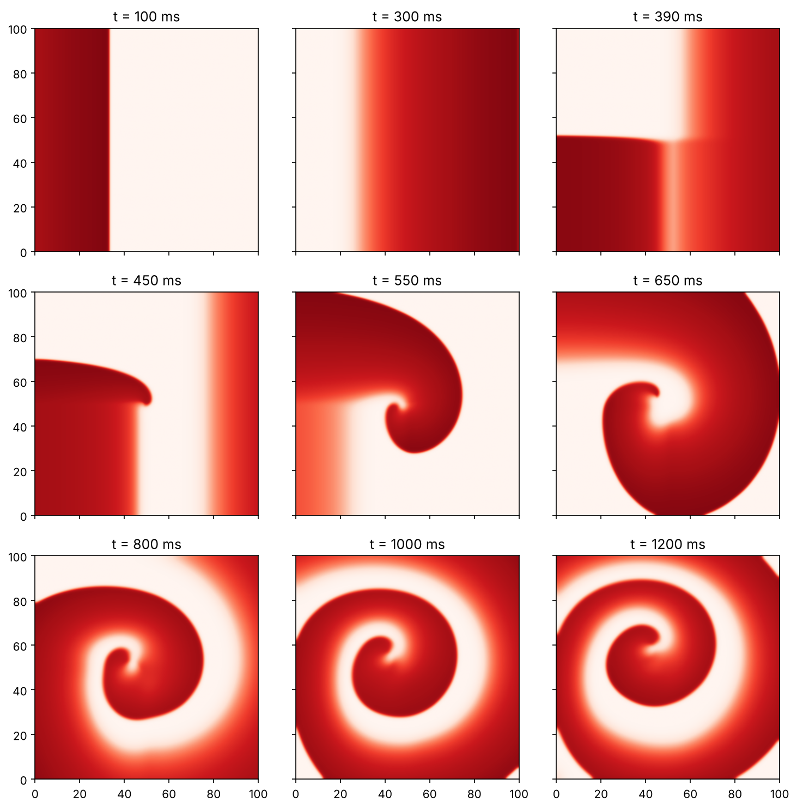
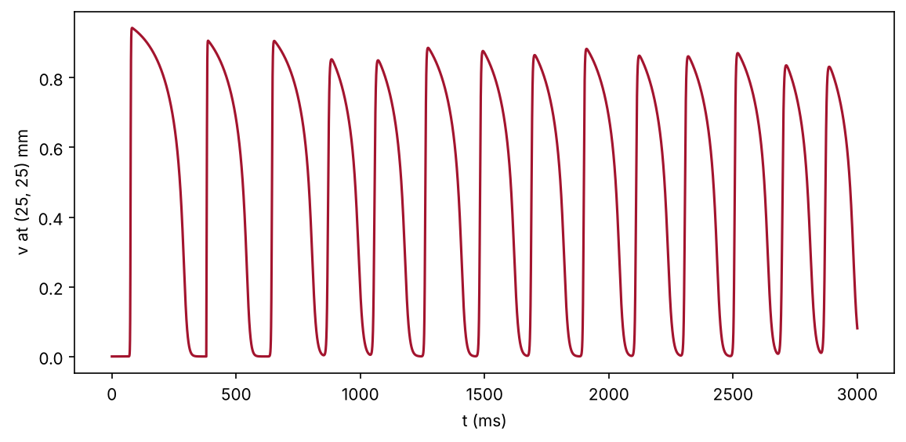

Chapter 5 · Outlook: Propagation of Excitation in Cardiac Tissue
5.4Spiral Waves in the Plane
In a layer of tissue the second derivative is replaced by the Laplace operator Δv. A second stimulus in partially refractory tissue creates a spiral wave that excites the tissue again and again without further stimuli – a model of ventricular tachycardia.
For each figure of the section you will find the program that produces it. Change parameters and initial values and observe what happens. Figure and equation numbers refer to the book.
Fig. 5.5
Formation of a spiral wave
∂v/∂t = D Δv + h v2 (1 − v)/τin − v/τout + J(x, y, t)
Square with side length 100 mm, Δx = 0.25 mm, Δt = 0.05 ms. Stimulus S1 at the left edge at t = 0, stimulus S2 in the lower half at t = 380 ms. The computation takes about one minute in Python, half a minute in Julia, and several minutes in MATLAB and R.

# Fig. 5.5: Formation of a spiral wave (book, Section 5.4, Eq. 5.6)
# square 100 mm x 100 mm, stimulus S1 at the left edge at t = 0, stimulus S2 in the lower half at t = 380 ms
# The computation takes about half a minute.
# (c) 2026 Philipp Kügler · Program for the book "Dynamical Systems in the Life Sciences" · MIT License (see LICENSE)
using Printf, Plots, Statistics
const tin = 0.3; const tout = 6.0; const topen = 100.0; const tclose = 115.0; const vgate = 0.13 # parameters in ms
const D = 0.1; const dx = 0.25; const dt = 0.05; const Lq = 100.0 # mm^2/ms, mm, ms, side length in mm
const N = round(Int, Lq / dx); const xs = dx .* ((1:N) .- 0.5) # grid points; first index x, second index y
function schritt!(v, h, vn, t)
# one Euler step; no flux across the boundary (missing neighbor = the cell itself); stimuli S1 (left edge) and S2 (lower half)
for j in 1:N, i in 1:N
vi = v[i, j]
lap = v[min(i + 1, N), j] + v[max(i - 1, 1), j] + v[i, min(j + 1, N)] + v[i, max(j - 1, 1)] - 4vi
J = (t < 2.0 && xs[i] <= 1.0) || (380.0 <= t < 382.0 && xs[j] <= Lq / 2) ? 0.2 : 0.0
vn[i, j] = vi + dt * (h[i, j] * vi^2 * (1 - vi) / tin - vi / tout + D * lap / dx^2 + J)
h[i, j] += dt * (vi < vgate ? (1 - h[i, j]) / topen : -h[i, j] / tclose)
end
end
function rechne(zeiten)
v = zeros(N, N); h = ones(N, N); vn = similar(v); bilder = Dict{Int, Matrix{Float64}}()
for n in 0:round(Int, 1200 / dt)
t = n * dt
for z in zeiten
abs(t - z) < 1e-6 && (bilder[z] = copy(v))
end
schritt!(v, h, vn, t); v, vn = vn, v
end
return bilder
end
zeiten = [100, 300, 390, 450, 550, 650, 800, 1000, 1200]
bilder = rechne(zeiten)
for z in zeiten
@printf("t = %4d ms: fraction excited (v > 0.5) = %.3f\n", z, mean(bilder[z] .> 0.5))
end
p = [heatmap(xs, xs, bilder[z]', color = :reds, clims = (0, 1), title = "t = $z ms", colorbar = false, aspect_ratio = 1) for z in zeiten]
display(plot(p..., layout = (3, 3), size = (900, 900)))% Fig. 5.5: Formation of a spiral wave (book, Section 5.4, Eq. 5.6)
% square 100 mm x 100 mm, stimulus S1 at the left edge at t = 0, stimulus S2 in the lower half at t = 380 ms
% The computation takes about four minutes.
% (c) 2026 Philipp Kügler · Program for the book "Dynamical Systems in the Life Sciences" · MIT License (see LICENSE)
tin = 0.3; tout = 6; topen = 100; tclose = 115; vgate = 0.13; % parameters in ms
D = 0.1; dx = 0.25; dt = 0.05; Lq = 100; % mm^2/ms, mm, ms, side length in mm
N = round(Lq / dx); xs = dx * ((1:N) - 0.5);
[X, Y] = ndgrid(xs, xs); % first index: x, second index: y
S1 = X <= 1; S2 = Y <= Lq / 2;
v = zeros(N); h = ones(N); r = [1 1:N N]; % r: indices with mirrored boundary (no flux)
zeiten = [100 300 390 450 550 650 800 1000 1200]; bilder = zeros(N, N, 9);
for n = 0:round(1200 / dt)
t = n * dt;
j = find(abs(zeiten - t) < 1e-6); if ~isempty(j), bilder(:, :, j) = v; end
vp = v(r, r);
lap = vp(3:end, 2:end-1) + vp(1:end-2, 2:end-1) + vp(2:end-1, 3:end) + vp(2:end-1, 1:end-2) - 4 * v;
dv = h .* v.^2 .* (1 - v) / tin - v / tout + D * lap / dx^2;
if t < 2, dv(S1) = dv(S1) + 0.2; end % stimulus S1
if t >= 380 && t < 382, dv(S2) = dv(S2) + 0.2; end % stimulus S2
dh = (v < vgate) .* (1 - h) / topen - (v >= vgate) .* h / tclose;
v = v + dt * dv; h = h + dt * dh;
end
for j = 1:9
B = bilder(:, :, j);
fprintf('t = %4d ms: fraction excited (v > 0.5) = %.3f\n', zeiten(j), mean(B(:) > 0.5));
subplot(3, 3, j); imagesc(xs, xs, B', [0 1]); axis xy equal tight; title(sprintf('t = %d ms', zeiten(j)));
end
colormap(flipud(hot));# Fig. 5.5: Formation of a spiral wave (book, Section 5.4, Eq. 5.6)
# square 100 mm x 100 mm, stimulus S1 at the left edge at t = 0, stimulus S2 in the lower half at t = 380 ms
# The computation takes about one minute.
# (c) 2026 Philipp Kügler · Program for the book "Dynamical Systems in the Life Sciences" · MIT License (see LICENSE)
import numpy as np
import matplotlib.pyplot as plt
tin, tout, topen, tclose, vgate = 0.3, 6.0, 100.0, 115.0, 0.13 # parameters in ms
D, dx, dt, Lq = 0.1, 0.25, 0.05, 100.0 # mm^2/ms, mm, ms, side length in mm
N = int(round(Lq / dx)); xs = dx * (np.arange(N) + 0.5)
X, Y = np.meshgrid(xs, xs, indexing="ij") # first index: x, second index: y
S1, S2 = X <= 1.0, Y <= Lq / 2
v = np.zeros((N, N)); h = np.ones((N, N))
zeiten = (100, 300, 390, 450, 550, 650, 800, 1000, 1200); bilder = {}
for n in range(int(round(1200 / dt)) + 1):
t = n * dt
if round(t, 6) in zeiten: bilder[round(t)] = v.copy()
vp = np.pad(v, 1, mode="edge") # no flux across the boundary
lap = vp[2:, 1:-1] + vp[:-2, 1:-1] + vp[1:-1, 2:] + vp[1:-1, :-2] - 4 * v
dv = h * v**2 * (1 - v) / tin - v / tout + D * lap / dx**2
if t < 2.0: dv[S1] += 0.2 # stimulus S1
if 380.0 <= t < 382.0: dv[S2] += 0.2 # stimulus S2
dh = np.where(v < vgate, (1 - h) / topen, -h / tclose)
v = v + dt * dv; h = h + dt * dh
for tz in zeiten:
print(f"t = {tz:4d} ms: fraction excited (v > 0.5) = {(bilder[tz] > 0.5).mean():.3f}")
fig, axs = plt.subplots(3, 3, figsize=(10, 10), sharex=True, sharey=True)
for ax, tz in zip(axs.flat, zeiten):
ax.imshow(bilder[tz].T, origin="lower", extent=(0, Lq, 0, Lq), cmap="Reds", vmin=0, vmax=1)
ax.set_title(f"t = {tz} ms")
plt.tight_layout()
plt.show()# Fig. 5.5: Formation of a spiral wave (book, Section 5.4, Eq. 5.6)
# square 100 mm x 100 mm, stimulus S1 at the left edge at t = 0, stimulus S2 in the lower half at t = 380 ms
# The computation takes about five minutes.
# (c) 2026 Philipp Kügler · Program for the book "Dynamical Systems in the Life Sciences" · MIT License (see LICENSE)
tin <- 0.3; tout <- 6; topen <- 100; tclose <- 115; vgate <- 0.13 # parameters in ms
D <- 0.1; dx <- 0.25; dt <- 0.05; Lq <- 100 # mm^2/ms, mm, ms, side length in mm
N <- round(Lq / dx); xs <- dx * ((1:N) - 0.5)
X <- matrix(xs, N, N); Y <- t(X) # first index: x, second index: y
S1 <- X <= 1; S2 <- Y <= Lq / 2
v <- matrix(0, N, N); h <- matrix(1, N, N)
vor <- c(2:N, N); zur <- c(1, 1:(N - 1)) # neighbor indices, at the boundary the cell itself (no flux)
zeiten <- c(100, 300, 390, 450, 550, 650, 800, 1000, 1200); bilder <- list()
for (n in 0:round(1200 / dt)) {
t <- n * dt
j <- which(abs(zeiten - t) < 1e-6); if (length(j)) bilder[[j]] <- v
lap <- v[vor, ] + v[zur, ] + v[, vor] + v[, zur] - 4 * v
dv <- h * v^2 * (1 - v) / tin - v / tout + D * lap / dx^2
if (t < 2) dv[S1] <- dv[S1] + 0.2 # stimulus S1
if (t >= 380 && t < 382) dv[S2] <- dv[S2] + 0.2 # stimulus S2
dh <- ifelse(v < vgate, (1 - h) / topen, -h / tclose)
v <- v + dt * dv; h <- h + dt * dh
}
weissrot <- colorRampPalette(c("white", rgb(0.89, 0.44, 0.49), rgb(0.64, 0.08, 0.18), rgb(0.43, 0.04, 0.12)))(64)
par(mfrow = c(3, 3), mar = c(2, 2, 2, 1))
for (j in 1:9) {
cat(sprintf("t = %4d ms: fraction excited (v > 0.5) = %.3f\n", zeiten[j], mean(bilder[[j]] > 0.5)))
image(xs, xs, bilder[[j]], col = weissrot, zlim = c(0, 1), main = sprintf("t = %d ms", zeiten[j]), asp = 1)
}Output in the command window
t = 100 ms: fraction excited (v > 0.5) = 0.333
t = 300 ms: fraction excited (v > 0.5) = 0.662
t = 390 ms: fraction excited (v > 0.5) = 0.644
t = 450 ms: fraction excited (v > 0.5) = 0.467
t = 550 ms: fraction excited (v > 0.5) = 0.398
t = 650 ms: fraction excited (v > 0.5) = 0.658
t = 800 ms: fraction excited (v > 0.5) = 0.577
t = 1000 ms: fraction excited (v > 0.5) = 0.640
t = 1200 ms: fraction excited (v > 0.5) = 0.588Fig. 5.6
An arrhythmia in the model
v at the point (25, 25) mm, 0 ≤ t ≤ 3000 ms
After the stimuli S1 and S2, action potentials follow at intervals of about 200 ms, about 300 per minute. On average they last 148 ms with diastolic intervals around 52 ms. The computation takes about three minutes in Python and about ten in MATLAB and R.

# Fig. 5.6: An arrhythmia in the model (book, Section 5.4, Eq. 5.6)
# as Fig. 5.5 up to t = 3000 ms; course of v at the point (25, 25) mm, intervals, durations, and diastolic intervals of the action potentials
# The computation takes about one minute.
# (c) 2026 Philipp Kügler · Program for the book "Dynamical Systems in the Life Sciences" · MIT License (see LICENSE)
using Printf, Plots, Statistics
const tin = 0.3; const tout = 6.0; const topen = 100.0; const tclose = 115.0; const vgate = 0.13 # parameters in ms
const D = 0.1; const dx = 0.25; const dt = 0.05; const Lq = 100.0 # mm^2/ms, mm, ms, side length in mm
const N = round(Int, Lq / dx); const xs = dx .* ((1:N) .- 0.5) # grid points; first index x, second index y
function schritt!(v, h, vn, t)
# one Euler step; no flux across the boundary (missing neighbor = the cell itself); stimuli S1 (left edge) and S2 (lower half)
for j in 1:N, i in 1:N
vi = v[i, j]
lap = v[min(i + 1, N), j] + v[max(i - 1, 1), j] + v[i, min(j + 1, N)] + v[i, max(j - 1, 1)] - 4vi
J = (t < 2.0 && xs[i] <= 1.0) || (380.0 <= t < 382.0 && xs[j] <= Lq / 2) ? 0.2 : 0.0
vn[i, j] = vi + dt * (h[i, j] * vi^2 * (1 - vi) / tin - vi / tout + D * lap / dx^2 + J)
h[i, j] += dt * (vi < vgate ? (1 - h[i, j]) / topen : -h[i, j] / tclose)
end
end
function rechne()
v = zeros(N, N); h = ones(N, N); vn = similar(v); i0 = floor(Int, 25 / dx) + 1
K = round(Int, 3000 / dt); spur = zeros(K)
for n in 0:K-1
schritt!(v, h, vn, n * dt); v, vn = vn, v
spur[n + 1] = v[i0, i0]
end
return spur
end
spur = rechne(); ts = dt .* collect(1:length(spur)) # as dt * k in the other languages
hoch(s) = [false; (spur[2:end] .> s) .& (spur[1:end-1] .<= s)]
akt = ts[hoch(0.5)] # v rises above 0.5
auf = ts[hoch(0.1)]; ab = ts[[false; (spur[2:end] .< 0.1) .& (spur[1:end-1] .>= 0.1)]]
m = min(length(auf), length(ab)); apd = ab[1:m] .- auf[1:m]; di = auf[2:end] .- ab[1:length(auf)-1]
abst = diff(akt)
@printf("Intervals between the action potentials (ms): [%s]\n", join([@sprintf("%.1f", d) for d in abst], " "))
@printf("from the 4th interval on: mean %.0f ms, mean APD %.0f ms, mean DI %.0f ms\n", mean(abst[4:end]), mean(apd[5:end]), mean(di[5:end]))
display(plot(ts, spur, color = RGB(0.64, 0.08, 0.18), lw = 1.5, legend = false, xlabel = "t (ms)", ylabel = "v at (25, 25) mm", size = (900, 400)))% Fig. 5.6: An arrhythmia in the model (book, Section 5.4, Eq. 5.6)
% as Fig. 5.5 up to t = 3000 ms; course of v at the point (25, 25) mm, intervals, durations, and diastolic intervals of the action potentials
% The computation takes about ten minutes.
% (c) 2026 Philipp Kügler · Program for the book "Dynamical Systems in the Life Sciences" · MIT License (see LICENSE)
tin = 0.3; tout = 6; topen = 100; tclose = 115; vgate = 0.13; % parameters in ms
D = 0.1; dx = 0.25; dt = 0.05; Lq = 100; % mm^2/ms, mm, ms, side length in mm
N = round(Lq / dx); xs = dx * ((1:N) - 0.5);
[X, Y] = ndgrid(xs, xs);
S1 = X <= 1; S2 = Y <= Lq / 2;
i0 = floor(25 / dx) + 1; % grid point at (25, 25) mm
v = zeros(N); h = ones(N); r = [1 1:N N];
K = round(3000 / dt); spur = zeros(1, K);
for n = 0:K-1
t = n * dt;
vp = v(r, r);
lap = vp(3:end, 2:end-1) + vp(1:end-2, 2:end-1) + vp(2:end-1, 3:end) + vp(2:end-1, 1:end-2) - 4 * v;
dv = h .* v.^2 .* (1 - v) / tin - v / tout + D * lap / dx^2;
if t < 2, dv(S1) = dv(S1) + 0.2; end
if t >= 380 && t < 382, dv(S2) = dv(S2) + 0.2; end
dh = (v < vgate) .* (1 - h) / topen - (v >= vgate) .* h / tclose;
v = v + dt * dv; h = h + dt * dh;
spur(n + 1) = v(i0, i0);
end
ts = dt * (1:K);
akt = ts([false, spur(2:end) > 0.5 & spur(1:end-1) <= 0.5]); % v rises above 0.5
auf = ts([false, spur(2:end) > 0.1 & spur(1:end-1) <= 0.1]); ab = ts([false, spur(2:end) < 0.1 & spur(1:end-1) >= 0.1]);
m = min(numel(auf), numel(ab)); apd = ab(1:m) - auf(1:m); di = auf(2:numel(auf)) - ab(1:numel(auf)-1);
abst = diff(akt);
fprintf('Intervals between the action potentials (ms): [%s]\n', strtrim(sprintf(' %.1f', abst)));
fprintf('from the 4th interval on: mean %.0f ms, mean APD %.0f ms, mean DI %.0f ms\n', mean(abst(4:end)), mean(apd(5:end)), mean(di(5:end)));
plot(ts, spur, 'Color', [0.64 0.08 0.18], 'LineWidth', 1.5);
xlabel('t (ms)'); ylabel('v at (25, 25) mm');# Fig. 5.6: An arrhythmia in the model (book, Section 5.4, Eq. 5.6)
# as Fig. 5.5 up to t = 3000 ms; course of v at the point (25, 25) mm, intervals, durations, and diastolic intervals of the action potentials
# The computation takes about three minutes.
# (c) 2026 Philipp Kügler · Program for the book "Dynamical Systems in the Life Sciences" · MIT License (see LICENSE)
import numpy as np
import matplotlib.pyplot as plt
tin, tout, topen, tclose, vgate = 0.3, 6.0, 100.0, 115.0, 0.13 # parameters in ms
D, dx, dt, Lq = 0.1, 0.25, 0.05, 100.0 # mm^2/ms, mm, ms, side length in mm
N = int(round(Lq / dx)); xs = dx * (np.arange(N) + 0.5)
X, Y = np.meshgrid(xs, xs, indexing="ij")
S1, S2 = X <= 1.0, Y <= Lq / 2
i0 = int(25 / dx) # grid point at (25, 25) mm
v = np.zeros((N, N)); h = np.ones((N, N)); spur = []
for n in range(int(round(3000 / dt))):
t = n * dt
vp = np.pad(v, 1, mode="edge")
lap = vp[2:, 1:-1] + vp[:-2, 1:-1] + vp[1:-1, 2:] + vp[1:-1, :-2] - 4 * v
dv = h * v**2 * (1 - v) / tin - v / tout + D * lap / dx**2
if t < 2.0: dv[S1] += 0.2
if 380.0 <= t < 382.0: dv[S2] += 0.2
dh = np.where(v < vgate, (1 - h) / topen, -h / tclose)
v = v + dt * dv; h = h + dt * dh
spur.append(v[i0, i0])
spur = np.array(spur); ts = dt * np.arange(1, len(spur) + 1)
akt = ts[1:][(spur[1:] > 0.5) & (spur[:-1] <= 0.5)] # v rises above 0.5
auf = ts[1:][(spur[1:] > 0.1) & (spur[:-1] <= 0.1)]; ab = ts[1:][(spur[1:] < 0.1) & (spur[:-1] >= 0.1)]
apd = ab[:len(auf)] - auf[:len(ab)]; di = auf[1:] - ab[:len(auf) - 1]
print("Intervals between the action potentials (ms):", np.round(np.diff(akt), 1))
print(f"from the 4th interval on: mean {np.diff(akt)[3:].mean():.0f} ms, mean APD {apd[4:].mean():.0f} ms, mean DI {di[4:].mean():.0f} ms")
plt.figure(figsize=(9, 4))
plt.plot(ts, spur, color=(0.64, 0.08, 0.18), lw=1.5)
plt.xlabel("t (ms)"); plt.ylabel("v at (25, 25) mm")
plt.show()# Fig. 5.6: An arrhythmia in the model (book, Section 5.4, Eq. 5.6)
# as Fig. 5.5 up to t = 3000 ms; course of v at the point (25, 25) mm, intervals, durations, and diastolic intervals of the action potentials
# The computation takes about ten minutes.
# (c) 2026 Philipp Kügler · Program for the book "Dynamical Systems in the Life Sciences" · MIT License (see LICENSE)
tin <- 0.3; tout <- 6; topen <- 100; tclose <- 115; vgate <- 0.13 # parameters in ms
D <- 0.1; dx <- 0.25; dt <- 0.05; Lq <- 100 # mm^2/ms, mm, ms, side length in mm
N <- round(Lq / dx); xs <- dx * ((1:N) - 0.5)
X <- matrix(xs, N, N); Y <- t(X)
S1 <- X <= 1; S2 <- Y <= Lq / 2
i0 <- floor(25 / dx) + 1 # grid point at (25, 25) mm
v <- matrix(0, N, N); h <- matrix(1, N, N)
vor <- c(2:N, N); zur <- c(1, 1:(N - 1))
K <- round(3000 / dt); spur <- numeric(K)
for (n in 0:(K - 1)) {
t <- n * dt
lap <- v[vor, ] + v[zur, ] + v[, vor] + v[, zur] - 4 * v
dv <- h * v^2 * (1 - v) / tin - v / tout + D * lap / dx^2
if (t < 2) dv[S1] <- dv[S1] + 0.2
if (t >= 380 && t < 382) dv[S2] <- dv[S2] + 0.2
dh <- ifelse(v < vgate, (1 - h) / topen, -h / tclose)
v <- v + dt * dv; h <- h + dt * dh
spur[n + 1] <- v[i0, i0]
}
ts <- dt * (1:K)
hoch <- function(s) c(FALSE, spur[-1] > s & spur[-K] <= s)
akt <- ts[hoch(0.5)] # v rises above 0.5
auf <- ts[hoch(0.1)]; ab <- ts[c(FALSE, spur[-1] < 0.1 & spur[-K] >= 0.1)]
m <- min(length(auf), length(ab)); apd <- ab[1:m] - auf[1:m]; di <- auf[-1] - ab[1:(length(auf) - 1)]
abst <- diff(akt)
cat(sprintf("Intervals between the action potentials (ms): [%s]\n", paste(sprintf("%.1f", abst), collapse = " ")))
cat(sprintf("from the 4th interval on: mean %.0f ms, mean APD %.0f ms, mean DI %.0f ms\n", mean(abst[-(1:3)]), mean(apd[-(1:4)]), mean(di[-(1:4)])))
plot(ts, spur, type = "l", col = rgb(0.64, 0.08, 0.18), lwd = 1.5, xlab = "t (ms)", ylab = "v at (25, 25) mm")Output in the command window
Intervals between the action potentials (ms): [306.6 262.3 226.5 186.8 204.1 220.2 207.1 210.3 210.7 196.7 200.2 192.5
172.5]
from the 4th interval on: mean 200 ms, mean APD 148 ms, mean DI 52 msTry it in the browser · no installation
Spiral wave in the plane
Equation (5.6) on a square with side length 100 mm. The S1-S2 protocol creates a spiral as in Figure 5.5. Click to set your own stimuli or non-conducting regions (scars).